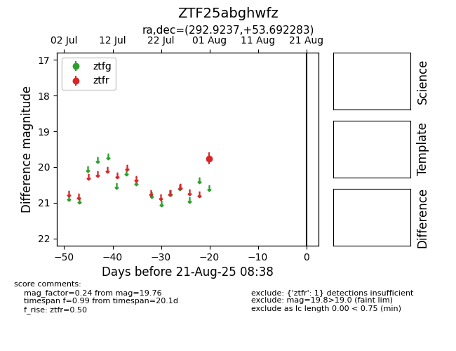

Target ZTF25abghwfz at 2025-08-21 08:38, see:
FINK: fink-portal.org/ZTF25abghwfz
Lasair: lasair-ztf.lsst.ac.uk/objects/ZTF25abghwfz
ALeRCE: alerce.online/object/ZTF25abghwfz
alt names
ZTF25abghwfz (ztf,alerce)
coordinates:
equatorial (ra, dec) = (292.9237,+53.69228)
galactic (l, b) = (85.5983,+15.98363)
photometry
last ztfr=19.76
1 ztfr detections
